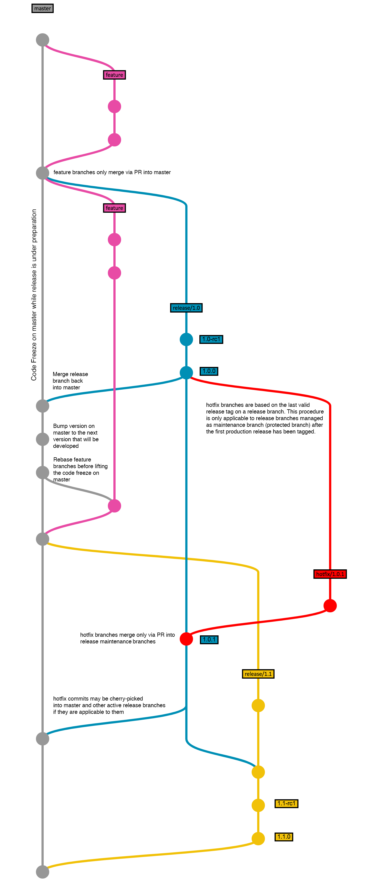

Source Code Repository¶
xobox uses Git for managing source code repositories. The project’s “blessed” Git repository (origin) resides at
GitHub. It is publicly accessible, but only core team members can push into this blessed
repository. Developers and other contributors are requested to fork the repository into their
personal space and offer code changes as pull request.
Repository Structure¶
Protected Branches¶
The eternal branch, master, is managed as protected branch:
masteris the main (eternal) branch. It represents the latest state of development.- direct commits to
masterare not permitted, instead, pull requests have to be used
In addition to master, also release branches become protected branches after the
initial version (patch level zero) has been released.
Feature Branches¶
Feature branches are used to develop new features for the upcoming or a distant future release. When starting
development of a feature, the target release in which this feature will be incorporated may well be unknown at that
point. The essence of a feature branch is that it exists as long as the feature is in development, but will eventually
be merged back into master.
Important
Feature branches are not intended to exist in the blessed repository itself, but instead
they should be limited to forks and local clones of the project’s Git repository (origin).
- Feature branches must be branched off
master - Feature branches must relate to a GitHub issue
- By convention, their name shall be prefixed with
feature/and the issue ID they refer to - Feature branches merge back into
mastervia pull request - Feature branches are deleted after being merged back into
master. They typically exist in developer repos only, but not inorigin.
Release Branches¶
Release branches support preparation of a new production release. They allow for last-minute minor bug fixes and preparing meta-data for a release (version number, build dates, etc.). Beyond preparation, they also serve as maintenance branches for a release post publication of that release. Once being in maintenance mode, release branches are managed as protected branches.
- Release branches must be branched off
master - By convention, their name shall be prefixed with
release/, followed by the release’s version number (release/<version>). The version number is a combination ofmajor.minor, withoutpatchsuffix. - Release branches merge back into
mastervia pull request. A merge of a release branch back intomasterabsolutely requires a release tag to be set on the head of the release branch prior merging.
Hotfix Branches¶
Hotfix branches are very much like feature branches in that they are also meant to introduce code changes into a protected branch, albeit unplanned. They arise from the necessity to act immediately upon an undesired state of a maintained, published production version. When a critical bug in a production version must be resolved immediately, a hotfix branch may be branched off from the corresponding release branch that marks the production version.
- Hotfix branches must be branched off the corresponding release tag on the corresponding release branch
- By convention, their name shall be prefixed with
hotfix/, followed by the release’s version number and hotfix suffix, as well as a reference to the corresponding issue (hotfix/<version>/<issue id>/<description>). - Hotfix branches merge back into the release branch eventually into
mastervia pull request. A merge of a hotfix branch back intomasteris only recommended ifmasterhas not evolved/diverged so much from the release maintenance branch that the fix hasn’t lost its relevance. In such a case, a cherry-pick is potentially the right approach instead of a fully-fledged merge.
Git Workflow¶
For the xobox project, we chose to follow a dedicated flow for development. The following graph illustrates the flow:
The development of a new feature, or the improvement of an existing feature (including bug fixing) always starts with opening an issue. Once the issue is created and assigned, a feature branch has to be created, following this naming convention:
feature/<class>/<issue id>/<description>
Note
Please note that the branch name must comply with reference name rules (cf. git check-ref-format).
The Issue ID is the numerical identifier generated by GitHub, padded to six digits (left padding with 0).
The class may be one of
- new – for new features
- imp – for optimisation or enhancement
- doc – for documentation only updates
- pro – for project related changes (code reorganization, governance changes, …)
- qca – for quality control & assurance related changes (policy, code quality, …)
Do the following in your local copy of your own fork:
git fetch
git checkout master
git pull
git checkout -b feature/new/001234/supergadget master
As soon as the feature branch is created and work has started, the related issue status should be updated to “in progress”.
Important
Do not use issue closing hooks (e. g. Fixes #1234) in your commit messages when committing to the feature branch.
Closing the issue is reserved for the pull request.
Once the work on the feature branch is done and continuous integration testing shows positive results, a pull request can be opened to notify the core team. The status of the corresponding issue should be updated to “ready”.
In case of acceptance, the pull request is authorised by a core team member, the feature branch gets merged into
master and can then deleted in your fork. The issue status is updated to “Integration”, which
means the issue can now be tested in the nightly builds.
Further reading on related models, including corresponding Git command line instructions:
Pull Request¶
GitHub Pull Requests are used to merge new code from a feature branch into a protected branch or from one protected branch into another.
This section concentrates on pull requests opened by developers in order to have a feature
branch merged into origin/master. Any other case, where pull requests are used (e. g. cleansing of branches etc.)
are processes solely played within the core team.
Important
When opening a pull request from your personal fork, please consider the hints given in Allowing Changes to a Pull Request. Otherwise it might be difficult to proceed with the PR.
Hint
Before opening a pull request, please ensure your feature branch is updated (rebased) to the latest HEAD of
origin/master, to ensure that only intended code changes become part of your PR.
Hint
You can use a pull request for intermediate reviews with the core team. In that case, keep the
status of the corresponding issue set to “in progress”, prefix the merge
request title with [WIP] and do not assign the pull request to anyone.
Pull requests may be accepted straight away (mostly in very simple cases, e. g. a simple bug fix) – although this most likely will rather be an exception. In such a case, the status of the corresponding issue will be updated to “Integration” by the core team member who accepted the pull request.
If otherwise the core team accepts the pull request for review, they will update the
issue status to “Review” and assign a core team member to the pull request. In this
(much more likely) scenario, the core team member in charge will review the content of the change request and its
implications for the code in origin/master together with the developer who opened the pull
request.
Note
Do not abuse pull requests to mature your code. As a general rule, a pull request should only be opened if implementation work on the feature branch is completed, and CI testing gives a green status.
In case of obvious immaturity or non-quality, non-compliance with governance and coding style, a pull request may be rejected by the core team. In such a case, the core team member rejecting the pull request shall write a justification statement (as a comment on the pull request), explaining why this pull request has been rejected.